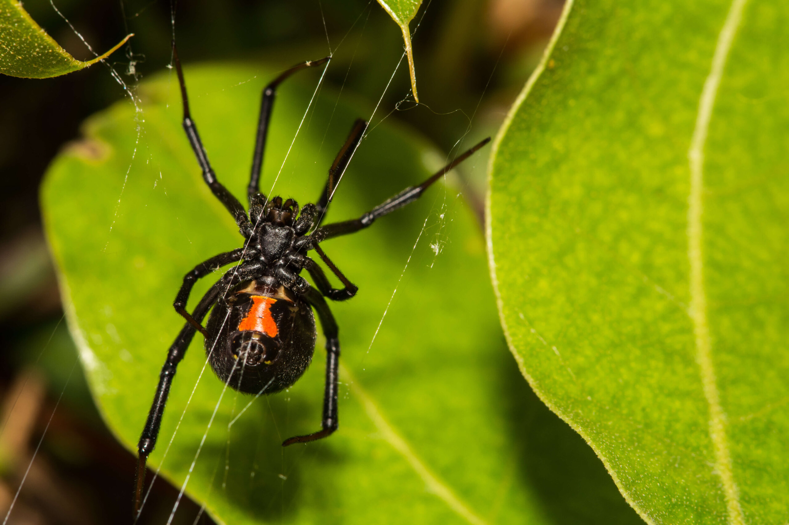
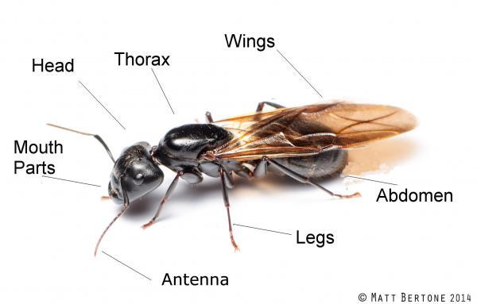
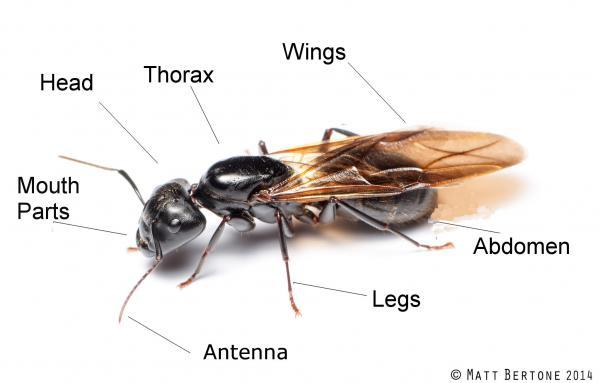
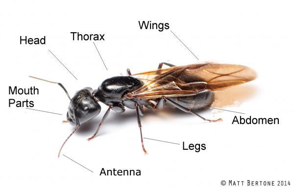

Spiders vs. Insects

 


Spiders are not insects. They both have some differences from each other. It has eight legs and two body segments, while an insect has six legs and three body segments. Spiders also lack antennae and wings, whereas insects have anteenae and many have wings. While spider typically have 8 simple eyes, while insects have a pair of compound eyes and often 1-3 simple eyes. Some other difference are spider produce silk from spinnerest in theer abdomen while insects can chew and have a more complex digestive system.